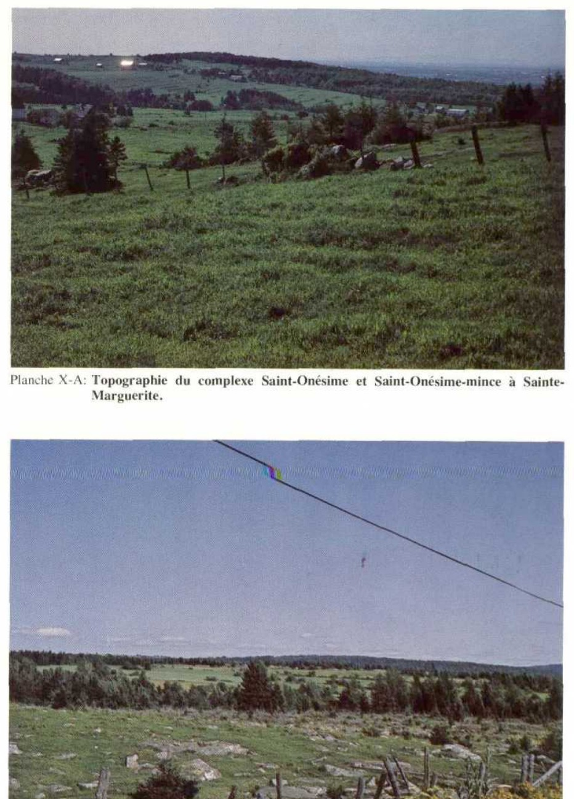
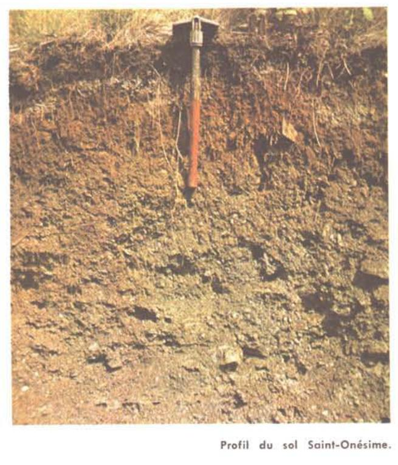

Identification & Caractéristiques Générales
Les sols de la série Saint-Onésime se développent sur un matériau originel constitué d'un till glaciaire à texture de loam, de teinte brune à brun foncé, dérivé principalement de grès, de schistes ardoisiers gris et bruns, de quartzites et de schistes argileux noirs. Ce dépôt morainique, caractérisé par sa forte pierrosité et sa nature acide, se rencontre dans la région physiographique des Appalaches, plus précisément sur le versant nord à des altitudes généralement supérieures à 150 mètres. La morphologie de ces sols est intimement liée à un relief fortement vallonnés à montueux, voire accidenté, où ils occupent les sommets de collines, les hauts de pente et les parties les plus convexes des élévations, présentant des pentes irrégulières variant de 10 à 30 %.
Sur le plan morphologique et hydropédologique, le profil présente une texture dominante de loam pierreux, avec la présence fréquente d'une phase mince sur roc. La pédogenèse est marquée par l'expression d'un horizon sous-jacent compact et fragique (Btx) caractérisé par une compacité accrue et une faible perméabilité, pouvant présenter des traces d'illuviation d'argile ainsi qu'un horizon albique sus-jacent. Malgré l'imperméabilité relative de cette couche compacte en profondeur, la position topographique élevée confère à ces sols un drainage naturel bon à excessif. La réaction du sol est fortement acide. L'enracinement des plantes peut être restreint par la compacité de l'horizon fragique ou par la faible profondeur du profil dans les secteurs où la phase mince domine.
Du point de vue agronomique, les potentialités de la série Saint-Onésime sont très limitées pour les grandes cultures et l'agriculture intensive. Les contraintes majeures incluent la forte pierrosité nécessitant des épierrements constants, la pente prononcée qui induit un risque élevé d'érosion hydrique en terrain cultivé, ainsi que la présence de l'horizon sous-sol compact. Par conséquent, ces sols sont majoritairement occupés par la forêt, abritant des peuplements feuillus dominés par l'érable à sucre, l'érable rouge, le bouleau et le tremble, parfois associés à des conifères comme l'épinette blanche et le sapin, ce qui favorise également l'exploitation acéricole. Lorsque défrichés, leur mise en valeur exige des investissements majeurs en matière de contrôle de l'érosion, de chaulage pour corriger l'acidité et d'aménagement de structures de drainage adaptées.
Caractères Distinctifs & Morphologie Génétique (Comté de Dorchester — Page 47)
- Topographie : fortement vallonnée et montueuse
- Drainage : bon à excessif
- Pierrosité : très pierreux à excessivement pierreux — 2 et 3
- Grand-groupe génétique : podzol
- Degré d'érosion : modéré (W2)
- Classes d'utilisation : (C) 4P à 7P (Q) 4c à 6
- Association géographique : Mont-Carmel, Ixworth
- Végétation naturelle : sapins, bouleaux, érables, hêtres, trembles
Classification Taxonomique & Environnement Pédologique
| Ordre Pédologique | Podzolique |
|---|---|
| Grand Groupe (SCSS) | Podzol humo-ferrique |
| Sous-Groupe Taxonomique | Podzol humo-ferrique fragique |
| Famille Pédologique | Loameuse-fine, mixte sableux, acide |
| Mode de Dépôt Parental | Morainique |
| Classe de Drainage Naturel | Bien drainé |
| Régime Thermique & Humidité | Frais / Subhumide |
Description Morphologique du Profil Type
Séquences génétiques des horizons pédologiques caractérisant le profil type représentatif de la série Saint-Onésime :
Profil représentatif — Comté de Dorchester
✓ Source : Comté de Dorchester — Page 47Couleur Munsell : 7.5YR 3/2, 2.5Y 4/0
Structure & Consistance : Moyenne granulaire
Description morphologique : Loam pierreux brun foncé (7.5YR 3/2) à gris foncé (2.5Y 4/0); structure moyenne granulaire; friable; pH: 3.5.
Couleur Munsell : 5YR 3/4
Structure & Consistance : Finement granulaire bien développée
Description morphologique : Loam pierreux brun-rouge foncé (5YR 3/4); structure finement granulaire bien développée; très friable; pH: 3.6.
Couleur Munsell : 10YR 5/3, 7.5YR 4/4
Structure & Consistance : Polyédrique à granulaire
Description morphologique : Loam pierreux brun (10YR 5/3) à brun foncé (7.5YR 4/4); sans structure; friable; pH: 3.9.
Couleur Munsell : 10YR 5/4
Structure & Consistance : Polyédrique à granulaire
Description morphologique : Loam pierreux brun-jaune (10YR 5/4); sans structure; friable; pH: 4.3.
Couleur Munsell : 10YR 6/6
Structure & Consistance : Polyédrique à granulaire
Description morphologique : Loam pierreux à loam sablo-argileux pierreux jaune-brun (10YR 6/6); sans structure; friable; pH: 4.2.
Couleur Munsell : 10YR 6/2
Structure & Consistance : Polyédrique à granulaire
Description morphologique : Loam pierreux à loam argileux pierreux gris-brun clair (10YR 6/2); sans structure; friable; pH: 4.6.
Profil naturel (vierge) — Comté de Kamouraska — Phase mince
✓ Source : Comté de Kamouraska — Page 88Couleur Munsell : 7.5YR 3/2
Structure & Consistance : Polyédrique à granulaire
Description morphologique : Humus brun foncé (7.5YR 3/2) peu ou pas minéralisé du type mor, friable, fibreux; net, varie de 3 à 5 po.; pH 4.1.
Couleur Munsell : 7.5YR 7/2
Structure & Consistance : Moyennement granulaire à lamellaire peu développée
Description morphologique : Loam gris rose (7.5YR 7/2), friable; structure moyennement granulaire à lamellaire peu développée; limites nettes, continu, varie de 2 à 5 po.; pH 4.1.
Couleur Munsell : 5YR 3/4
Structure & Consistance : Finement granulaire bien développée
Description morphologique : Loam brun rouge foncé (5YR 3/4), très friable; structure finement granulaire bien développée; limites graduelles, quelques cailloux anguleux; pH 3.9-4.4.
Couleur Munsell : 7.5YR 4/4
Structure & Consistance : Finement à moyennement granulaire
Description morphologique : Loam brun à brun foncé (7.5YR 4/4), friable; structure finement à moyennement granulaire, peu développée; limites nettes; quelques cailloux anguleux; pH 5.1.
Couleur Munsell : 10YR 4/3
Structure & Consistance : Polyédrique à agrégats moyens
Description morphologique : Loam brun à brun foncé (10YR 4/3), ferme; structure polyédrique à agrégats moyens; graduel, quelques cailloux anguleux; pH 5.1.
Couleur Munsell : 10YR 4/4
Structure & Consistance : Finement polyédrique
Description morphologique : Loam brun jaune foncé (10YR 4/4), ferme, structure finement polyédrique, avec mouchetures et quelques cailloux, quelques raies grises caractéristiques; limites nettes; pH 5.1.
Couleur Munsell : 10YR 4/2
Structure & Consistance : Polyédrique à granulaire
Description morphologique : Loam brun gris foncé (10YR 4/2), très ferme en place; agrégats grossièrement polyédriques à massifs devenant durs à briser en séchant et éclatant en poudre sous la pression des doigts (fragipan faiblement développé), avec mouchetures distinctes, moyennes et de couleur brun jaune; limites diffuses; avec enduits argileux et limoneux (clay skins ou Tonhaütchen); pH 4.9.
Couleur Munsell : 7.5YR 4/2
Structure & Consistance : Massive
Description morphologique : Loam brun à brun foncé (7.5YR 4/2) moins ferme en place que l'horizon précédent, structure massive, avec quelques raies grises bien distanciées, mouchetures distinctes, quelques cailloux; pH 5.2.
Couleur Munsell : Non précisée
Structure & Consistance : Polyédrique à granulaire
Description morphologique : Repose sur le roc généralement entre 2 et 6 pieds.
Profil cultivé (agricole) — Comté de L'islet
✓ Source : Comté de L'islet — Page 67Couleur Munsell : 5YR 3/2
Structure & Consistance : Polyédrique à granulaire
Description morphologique : Humus brun foncé (7,5 YR 3/2 h; 4/2 s); peu ou pas minéralisé; type mor; friable; fibreux; net; varie de 8 à 13 cm; pH 4,1.
Couleur Munsell : 5YR 7/2
Structure & Consistance : Moyennement granulaire à lamellaire peu développée
Description morphologique : Loam gris-rose (7,5 YR 7/2), friable; structure moyennement granulaire à lamellaire peu développée; limites nettes; continu, varie de 5 à 13 cm; pH 4,1.
Couleur Munsell : 5YR 3/4
Structure & Consistance : Granulaire fine
Description morphologique : Loam brun-rouge foncé à brun-rouge (5 YR 3/4 h; 4/4 s); très friable; structure granulaire fine; bien développée; quelques cailloux; limites graduelles; pH 3,9-4,4.
Couleur Munsell : 5YR 4/4
Structure & Consistance : Granulaire fine à moyenne
Description morphologique : Loam brun ou brun foncé à brun vif (7,5 YR 4/4 h; 5/6 s); friable; structure granulaire fine à moyenne, peu développée; quelques cailloux anguleux.
Couleur Munsell : 10YR 4/3
Structure & Consistance : Polyédrique à agrégats moyens
Description morphologique : Loam brun foncé à brun-jaune (10 YR 4/3 h; 5/4 s); ferme; structure polyédrique à agrégats moyens; quelques cailloux anguleux; limites graduelles; pH 5,1.
Couleur Munsell : 10YR 4/4
Structure & Consistance : Polyédrique fine
Description morphologique : Loam brun-jaune foncé à brun-jaune clair (10 YR 4/4 h; 6/4 s); ferme; structure polyédrique fine; mouchetures rares et faibles; quelques cailloux; quelques raies grises caractéristiques; limites nettes; pH 5,1.
Couleur Munsell : 10YR 4/2
Structure & Consistance : Massive
Description morphologique : Loam brun-gris foncé à brun-gris (10 YR 4/2 h; 5/2 s); très ferme en place; agrégats grossièrement polyédriques ou structure massive; devient dur à briser en séchant et éclate en poudre sous la pression des doigts; mouchetures fréquentes distinctes, moyennes et de couleur brun-jaune; limites diffuses; enduits argileux et limoneux (argilanes et siltanes); pH 4,9.
Couleur Munsell : 5YR 4/2
Structure & Consistance : Massive
Description morphologique : Loam brun à brun foncé (7,5 YR 4/2 h; 5/3 s); moins ferme en place que l'horizon précédent; structure massive; quelques raies grises bien distancées; mouchetures rares, distinctes; quelques cailloux; pH 5,2.
Couleur Munsell : Non précisée
Structure & Consistance : Polyédrique à granulaire
Description morphologique : Repose sur le roc, généralement entre 0,8 et 1,8 m.
Profil cultivé (agricole) — Comté de Rivière-du-loup
✓ Source : Comté de Rivière-du-loup — Page 69Couleur Munsell : 7.5YR 3/2
Structure & Consistance : Polyédrique à granulaire
Description morphologique : Humus brun foncé (7.5 YR 3/2 h; 4/2 s); peu ou pas minéralisé; type mor; friable; fibreux; net; varie de 8 à 13 cm; pH; 4,1.
Couleur Munsell : 7.5YR 7/2
Structure & Consistance : Moyennement granulaire à lamellaire peu développée
Description morphologique : Loam gris-rose (7.5 YR 7/2); friable; structure moyennement granulaire à lamellaire peu développée; limites nettes; continu, varie de 5 à 13 cm; pH: 4,1.
Couleur Munsell : 5YR 3/4
Structure & Consistance : Granulaire fine
Description morphologique : Loam brun-rouge foncé à brun-rouge (5 YR 3/4 h; 4/4 s); très friable; structure granulaire fine; bien développée; quelques cailloux; limites graduelles; pH: 3,9-4,4.
Couleur Munsell : 7.5YR 4/4
Structure & Consistance : Granulaire fine à moyenne
Description morphologique : Loam brun ou brun foncé à brun vif (7.5 YR 4/4 h; 5/6 s); friable; structure granulaire fine à moyenne, peu développée; quelques cailloux anguleux.
Couleur Munsell : 10YR 4/3
Structure & Consistance : Polyédrique à agrégats moyens
Description morphologique : Loam brun foncé à brun-jaune (10 YR 4/3 h; 5/4 s); ferme; structure polyédrique à agrégats moyens; quelques cailloux anguleux; limites graduelles; pH: 5,1.
Couleur Munsell : 10YR 4/4
Structure & Consistance : Polyédrique fine
Description morphologique : Loam brun-jaune foncé à brun-jaune clair (10 YR 4/4 h; 6/4 s); ferme; structure polyédrique fine; mouchetures rares et faibles; quelques cailloux; quelques raies grises caractéristiques; limites nettes; pH: 5,1.
Couleur Munsell : 10YR 4/2
Structure & Consistance : Massive
Description morphologique : Loam brun-gris foncé à brun-gris (10 YR 4/2 H; 5/2 s); très ferme en place; agrégats grossièrement polyédriques ou structure massive; devient dur à briser en séchant et éclate en poudre sous la pression des doigts; mouchetures fréquentes, distinctes, moyennes et de couleur brun-jaune; limites diffuses; enduits argileux et limoneux (argilanes et siltanes); pH: 4,9.
Couleur Munsell : 7.5YR 4/2
Structure & Consistance : Massive
Description morphologique : Loam brun à brun foncé (7.5 YR 4/2 h; 5/3 s); moins ferme en place que l'horizon précédent; structure massive; quelques raies grises bien distancées; mouchetures rares, distinctes; quelques cailloux; pH: 5,2.
Couleur Munsell : Non précisée
Structure & Consistance : Polyédrique à granulaire
Description morphologique : Repose sur le roc, généralement entre 0,8 et 1,8 m.
Profil forestier / boisé — Comté de Bellechasse — Phase mince
✓ Source : Comté de Bellechasse — Page 48Couleur Munsell : 7.5YR 3/2
Structure & Consistance : Polyédrique à granulaire
Description morphologique : Humus fibreux, peu minéralisé, brun foncé (7.5YR 3/2); friable et perméable; pH 4.1.
Couleur Munsell : 7.5YR 7/2
Structure & Consistance : Lamellaire peu développée
Description morphologique : Loam grise rose (7.5YR 7/2); structure lamellaire peu développée; limites irrégulières; friable et perméable; pH 4.1.
Couleur Munsell : 5YR 3/4
Structure & Consistance : Finement granulaire
Description morphologique : Loam pierreux, brun rouge foncé (5YR 3/4); structure finement granulaire; limites irrégulières; friable et perméable; pH 4.4.
Couleur Munsell : 7.5YR 4/4
Structure & Consistance : Granulaire peu développée
Description morphologique : Loam pierreux, brun foncé (7.5YR 4/4); structure granulaire peu développée; friable et perméable; pH 5.1.
Couleur Munsell : 10YR 4/3
Structure & Consistance : Polyédrique à agrégats moyens
Description morphologique : Loam pierreux, brun (10YR 4/3); structure polyédrique à agrégats moyens; ferme et peu perméable; pH 5.1.
Couleur Munsell : 10YR 4/4 (matrice), 10YR 5/6 (marbrures)
Structure & Consistance : Quasi massive
Description morphologique : Loam pierreux, brun jaune foncé (10YR 4/4); mouchetures brun jaune (10YR 5/6); structure quasi massive; ferme mais éclatant sous la pression des doigts; fragipan avec enduits argileux et limoneux; pH 5.2.
Profils Photographiques & Planches de Terrain
Documents iconographiques, figures pédologiques et coupes de terrain documentées dans les mémoires d'inventaire pour de la série Saint-Onésime :




Propriétés Physico-Chimiques & Analyses de Laboratoire
| Horizon | Prof. (pces/cm) | Sable % | Limon % | Argile % | pH | C % | N % | Ca éch. | Mg éch. | K éch. | H+ éch. | Bases tot. | C.E.C. (meq/100g) | Saturation % | ||
|---|---|---|---|---|---|---|---|---|---|---|---|---|---|---|---|---|
| L-H | 2–0 | 0.15 | 22.50 | 1.09 | 41800 | 20.65 | 41.8 | 8.7 | 4.0 | 1.3 | 0.24 | 56.0 | 25.3 | 14.2 | 0.63 | 1.0 |
| Ae | 0–3 | 0.01 | 0.78 | 0.04 | 1805 | 19.02 | 1.8 | 0.6 | 0.6 | 0.1 | <0.01 | 3.1 | 41.9 | 1.3 | 0.25 | 1.3 |
| Bhf | 3–11 | 0.09 | 2.22 | 0.10 | 11300 | 22.20 | 11.3 | 0.5 | 0.5 | 0.2 | <0.01 | 12.5 | 9.6 | 1.2 | 0.26 | 1.6 |
| Bf | 11–17 | 0.06 | 0.86 | 0.05 | 3480 | 17.20 | 3.5 | 0.2 | 0.5 | 0.2 | 0.01 | 4.4 | 20.4 | 0.9 | 0.20 | 2.0 |
| $\text{C}_1\text{g(A'c)}$ | 17–21 | 0.06 | 0.62 | 0.04 | 3250 | 15.50 | 3.2 | 0.2 | 0.5 | 0.1 | <0.01 | 4.0 | 20.0 | 0.8 | 0.20 | 1.0 |
| $\text{C}^2\text{qg}$ | 21–30 | 0.07 | 0.41 | 0.03 | 3640 | 13.60 | 3.6 | 1.4 | 1.7 | 0.2 | 0.01 | 6.9 | 47.8 | 3.3 | 0.27 | 0.6 |
| L-H | 2–0 | 0.13 | 14.45 | 0.55 | 35880 | 26.27 | 35.8 | 3.2 | 1.9 | 0.6 | 0.01 | 41.5 | 13.7 | 5.7 | 1.24 | 2.8 |
| Ae | 0–4 | 0.03 | 0.95 | 0.06 | 5460 | 15.83 | 5.5 | 0.5 | 0.5 | 0.1 | 0.01 | 6.6 | 16.7 | 1.1 | 0.30 | 2.4 |
| Bhf | 4–10 | 0.14 | 6.51 | 0.27 | 39500 | 24.11 | 39.5 | 0.5 | 0.5 | 0.3 | 0.08 | 40.4 | 2.2 | 0.9 | 0.71 | 5.7 |
| Bf | 10–14 | 0.08 | 2.19 | 0.10 | 10800 | 21.90 | 10.8 | 0.3 | 0.4 | 0.2 | 0.02 | 11.7 | 7.7 | 0.9 | 0.26 | 2.7 |
| $\text{Cqg(B'tq)}$ | 14– | 0.08 | 0.68 | 0.04 | 5380 | 17.00 | 5.4 | 0.3 | 0.4 | 0.2 | 0.02 | 6.3 | 14.3 | 0.9 | 0.40 | 2.6 |
| L-H(Ca) | 4–0 | 0.08 | 4.02 | 0.17 | 7470 | 23.65 | 7.5 | 3.1 | 1.4 | 0.2 | <0.01 | 12.2 | 38.5 | 4.7 | 0.66 | 2.0 |
| Ae | 0–1 | 0.03 | 1.03 | 0.05 | 2850 | 20.60 | 2.8 | 1.1 | 0.8 | 0.1 | 0.04 | 4.8 | 41.7 | 2.0 | 0.25 | 2.0 |
| Bhf-$\text{Bf}_1$ | 1–6 | 0.17 | 1.84 | 0.08 | 11970 | 23.00 | 12.0 | 0.8 | 0.7 | 0.2 | 0.01 | 13.7 | 12.4 | 1.7 | 0.30 | 2.4 |
| $\text{Bf}_2$ | 6–25 | 0.13 | 0.75 | 0.04 | 3460 | 18.75 | 3.5 | 0.5 | 0.7 | 0.1 | 0.03 | 4.8 | 27.1 | 1.3 | 0.25 | 2.2 |
| BC | 25+ | 0.10 | 0.53 | 0.04 | 2870 | 13.25 | 2.9 | 0.5 | 0.5 | 0.1 | <0.01 | 4.0 | 27.5 | 1.1 | 0.30 | 2.2 |
| Aa | 0–5 | 0.11 | 1.40 | 0.07 | 3835 | 20.00 | 3.8 | 1.0 | 0.5 | 0.3 | 0.01 | 5.6 | 32.1 | 1.8 | 0.30 | 2.0 |
| Bhf | 5–9 | 0.06 | 0.57 | 0.03 | 382 | 19.00 | 0.4 | 0.5 | 0.5 | 0.2 | <0.01 | 1.6 | 75.0 | 1.2 | 0.15 | 1.0 |
| Bhfc | 9–16 | 0.25 | 0.94 | 0.04 | 3830 | 23.5 | 3.8 | 0.5 | 0.5 | 0.2 | 0.01 | 5.0 | 24.0 | 1.2 | 0.40 | 2.0 |
| $\text{Bf}_2$ | 16–19 | 0.07 | 0.50 | 0.02 | 181 | 25.00 | 0.2 | 0.5 | 0.5 | 0.2 | <0.01 | 1.4 | 85.7 | 1.2 | 0.30 | 2.0 |
| B-C | 19–30 | 0.08 | 0.49 | 0.02 | 181 | 24.50 | 0.2 | 0.5 | 0.5 | 0.2 | <0.01 | 1.4 | 85.7 | 1.2 | 0.25 | 0.6 |
| II C | 30– | 0.09 | 0.72 | 0.03 | 946 | 24.00 | 0.9 | 0.6 | 0.5 | 0.2 | <0.01 | 2.2 | 59.1 | 1.3 | 0.10 | 0.6 |
Particularités Régionales, Phases & Variantes Pédologiques
Déclinaisons régionales, faciès texturaux, phases d'érosion ou de pierrosité et variantes cartographiées par étude pour de la série Saint-Onésime :
| Étude Régionale | Symbole | Appellation / Phase / Variante | Différenciation avec la série type (Analyse pédologique) |
|---|---|---|---|
| Comté de Bellechasse | O |
Saint-Onésime loam pierreux | Modalité modale de référence (type de base de la série). |
O-m |
Saint-Onésime loam pierreux mince | Phase pierreuse; Phase mince sur substrat rocheux (< 50 cm). | |
| Comté de Dorchester | O |
Saint-Onésime loam pierreux | Phase pierreuse. |
O-m |
Saint-Onésime loam pierreux mince | Phase pierreuse; Phase mince sur substrat rocheux (< 50 cm). | |
| Comté de Kamouraska | O |
Saint-Onésime loam pierreux | Phase pierreuse. |
O-m |
Saint-Onésime loam pierreux phase mince | Phase pierreuse; Phase mince sur substrat rocheux (< 50 cm). | |
| Comté de L'islet | O |
Saint-Onésime loam pierreux | Phase pierreuse. |
O-m |
Saint-Onésime loam pierreux mince | Phase pierreuse; Phase mince sur substrat rocheux (< 50 cm). | |
| Comté de Rivière-du-loup | O |
Saint-Onésime loam pierreux | Phase pierreuse. |
O-m |
Saint-Onésime loam pierreux phase mince | Phase pierreuse; Phase mince sur substrat rocheux (< 50 cm). |
Distribution Pédo-Paysagère & Représentativité Cartographique (Couverture PPS 2026)
- Mont-Carmel loam pierreux (MOM) — co-occurrente dans 484 polygone(s)
- Affleurements rocheux (ARR) — co-occurrente dans 303 polygone(s)
- Manie loam pierreux (MNI) — co-occurrente dans 255 polygone(s)
Aptitudes Agronomiques, Hydropédologie & Conservation des Sols
Indicateurs Hydropédologiques & Vulnérabilité à l'Érosion (BDHP 2026)
Interprétation BDHP : Potentiel de ruissellement modérément élevé. Faible taux d'infiltration, présence d'horizons ralentissant le drainage descendant.
Classement selon l'Inventaire des Terres du Canada (ITC / CLI) : Classe 1.
- Potentiel agricole : Terroir adapté aux cultures régionales selon la texture dominante et la régie de drainage.
- Contraintes majeures : Bien drainé. Risque d'engorgement temporaire ou d'excès d'eau printanier.
- Gestion & Aménagement : Drainage souterrain ou superficiel préconisé sur les terres planes. Chaulage et apport organique régulier selon les bilans agronomiques.
- Cultures adaptées : Grandes cultures (maïs, soya, céréales), prairies fourragères et cultures maraîchères selon le contexte géomorphologique.